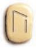
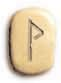

Libro de las Runas

“Las runas son el alfabeto secreto del universo, cada una encierra una enseñanza, una postura y un poder.”
Autor/a: Tu Nombre
Prólogo
Desde tiempos antiguos, las runas han acompañado a los pueblos del norte como símbolos cargados de poder y significado. Cada runa es una llave, una puerta hacia el autoconocimiento y la magia del lenguaje sagrado.
Este libro reúne la esencia de las 24 runas del Futhark antiguo, sus posturas, rituales y secretos para la práctica contemporánea.
Índice
Fehu [F]

Abundancia de dar y recibir
Significado: Fehu es una antena que atrae y distribuye energía. Es la primera letra del alfabeto futharc y representa el fuego comunitario, la alegría que se comparte, la abundancia que se prodiga.
Detalle: Fehu representa el dinero. Es la primera runa del octeto correspondiente al plano físico que nos recuerda la condición de la vida encarnada. Fehu es energía que circula.
Invertida: Cuando Fehu sale invertida, indica que la persona está embarcada en una tarea inútil como querer aferrar el agua o la arena que corre entre los dedos. Energía desperdiciada, despilfarro, malgastar dinero o fuerza vital.

Ritual: Existe un ritual perteneciente a los pueblos originarios llamado la atadura de los años, que nos ayuda a comprender el mensaje de Fehu. Al concluir un ciclo, se apagan la totalidad de los hogares y se enciende un fuego nuevo.
Nombres alternativos: Fé, Faiu, Feo
Uruz [U]
Fuerza de la iniciación
Significado: Uruz representa al uro o buey salvaje, animal de fuerza indomable. Indica fuerza y sabiduría. Apela a la reserva individual que nos habita, a ese fuego propio.
Detalle: En las antiguas tribus vikingas la matanza del uro era parte de un ritual iniciático. Su aparición en una tirada sugiere recurrir a las potencias del instinto como motor de vida.
Invertida: Uruz invertida es runa de sacrificio. Sacrificio no significa sometimiento, sino hacer sagrado, elevar una materia densa, ofrendarla para recibir una energía sutil. La sugerencia de la runa es aceptar lo inútil del sacrificio frente a la contundencia del destino.

Nombres alternativos: Ur, Urs
Thurisaz [TH]

Fuerza de un gigante
Significado: Thurisaz está representada por el gigante Thor. Identifica una acción potente, directa e irreflexiva. Es runa de curación desestructurante.
Detalle: En las leyendas vikingas, Thor rompe con estructuras anteriores para dar lugar a lo nuevo. Cuando esta runa aparece, el pasaje de una situación a otra es violento, sorpresivo o directo.
Invertida: Thurisaz invertida: toda esa potencia se vuelve en contra, produce enojo por no actuar en el momento propicio. El significado oracular puede ser mirada interior o que toda acción conduce al debilitamiento de la situación.

Nombres alternativos: Thorn
Ansuz [A]

En un principio fue el verbo
Significado: Ansuz simboliza la voz, la palabra, la poesía. Abre el pórtico del futharc e introduce en los caminos del conocimiento de sí.
Detalle: Ansuz comunica con los dioses arquetípicos que habitan dentro de uno. Comunica el pensamiento con el exterior y representa la autoridad paterna.
Invertida: Cuando Ansuz sale invertida significa llamarse a silencio, o puede ser que la energía del dios Loqui circunde la situación y haya engaño.

Nombres alternativos: Ansuz, As, Ansur
Raidho [R]

El viaje hacia mi destino
Significado: Significa viaje, un largo viaje en carro. Es encuentro y comunicación con los pares. Comunicación a través de la acción.
Detalle: El diseño muestra que una patita de la R está dando un paso, en acción de avanzar. Raidho es: hacia donde voy, mi destino u objetivo.
Invertida: Cuando Raidho sale invertida, significa estancamiento, viajes bloqueados, obstáculos en la comunicación y la acción.

Nombres alternativos: Rad
Kaunaz [K]

El ojo de Dios
Significado: Kaunaz es el ojo de Dios, el fuego del conocimiento, la chispa divina, la creatividad y la visión interna.
Detalle: Representa la luz que nos permite ver en la oscuridad, la inspiración y la revelación.
Invertida: Kaunaz invertida puede indicar confusión, pérdida de claridad, dificultad para ver la solución.

Nombres alternativos: Kenaz, Kaunan
Gebo [G]

El regalo de una pareja equilibrada
Significado: Gebo representa el regalo, la pareja, el equilibrio entre dar y recibir. Es la runa de la generosidad y los vínculos.
Detalle: Simboliza el encuentro de dos partes que se reconocen y logran fundirse en un instante infinito.
Invertida: Gebo no tiene posición invertida, siempre es positiva.

Nombres alternativos: Gyfu
Wunjo [W]
Un lugar de llegada para mi alegría
Significado: Wunjo representa la alegría, la meta alcanzada, el bienestar, la armonía y la felicidad compartida.
Detalle: Simboliza el momento de celebración por los logros y la unión con los demás.
Invertida: Wunjo invertida indica tristeza, rupturas, pérdida de alegría o disonancia en los vínculos.

Nombres alternativos: Wunyo, Wungo